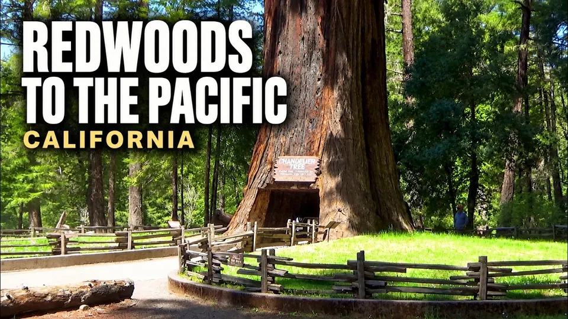

Santa Rosa
California

The places
2 films from places named in the titles.
The map marks the places that can be located from those titles; it is not a record of one continuous drive.
The map loads when you scroll to it. The stops are listed below.
Map data © OpenStreetMap
Step through the stops
California
California
California
California
Along the way
Mendocino, California, United States
Listed as: Flow
American
45040 Main Street, Mendocino, CA 95460
Open
Santa Rosa, California, United States
American / breakfast and lunch
Open
Several locations in Santa Rosa.
Graton, California, United States
American / bistro
9113 Graton Road, Graton, CA 95444
Open
Yountville, California, United States
French
6510 Washington Street, Yountville, CA 94599
Open
The films